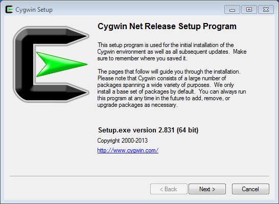
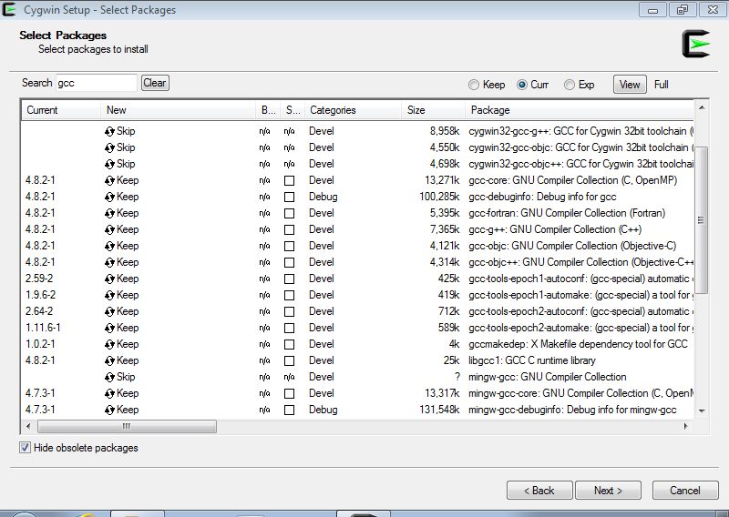
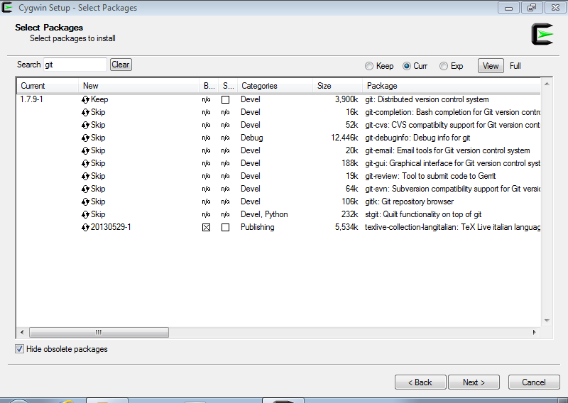

2. Installation¶
BEDOPS is available to users as pre-built binaries and source code.
2.1. Via pre-built packages¶
Pre-built binaries offer the easiest and fastest installation option for users of BEDOPS. At this time, we offer binaries for 32- and 64-bit versions of Linux and OS X (Intel) platforms.
2.1.1. Linux¶
Download the current 32- or 64-bit package for Linux from Github BEDOPS Releases.
Extract the package to a location of your choice. In the case of 32-bit Linux:
$ tar jxvf bedops_linux_i386-vx.y.z.tar.bz2
In the case of 64-bit Linux:
$ tar jxvf bedops_linux_x86_64-vx.y.z.tar.bz2
Replace x, y and z with the version number of BEDOPS you have downloaded.
Copy the extracted binaries to a location of your choice which is in your environment’s PATH, e.g. ~/opt/bin:
$ cp bin/* ~/opt/bin
Change this destination folder, as needed.
2.1.2. Mac OS X¶
- Download the current Mac OS X package for BEDOPS from Github BEDOPS Releases.
- Locate the installer package (usually located in ~/Downloads – this will depend on your web browser configuration):
- Double-click to open the installer package. It will look something like this:
- Follow the instructions to install BEDOPS and library dependencies to your Mac. (If you are upgrading from a previous version, components will be overwritten or removed, as needed.)
2.2. Via source code¶
At this time, compilation of BEDOPS requires GCC 4.8.x (both gcc and g++ and related components) or greater, which includes support for C++11 features required by core BEDOPS tools. Other tools may be required (some which are platform-specific) as described in the installation documentation that follows.
2.2.1. Linux¶
If you do not have GCC 4.8 or greater installed (both gcc and g++), first install these tools. You can check the state of your GCC installation with gcc --version and g++ --version, e.g.:
$ gcc --version gcc (GCC) 4.8.0 20130127 (experimental) ...
If you lack a compiler or have a compiler that is older than 4.8, use your favorite package manager to install or upgrade the newer package. For example, in Ubuntu, you might run the following:
$ sudo apt-get install gcc-4.8 $ sudo apt-get install g++-4.8 $ sudo update-alternatives --install /usr/bin/gcc gcc /usr/bin/gcc-4.8 50 $ sudo update-alternatives --install /usr/bin/g++ g++ /usr/bin/g++-4.8 50
The specifics of this process will depend on your distribution and what you want to install. Please check with your system administration or support staff if you are unsure what your options are.
Install a git client of your choice, if you do not already have one installed. Github offers an installation guide.
Alternatively, use apt-get or another package manager to install one, e.g.
$ sudo apt-get install git
Clone the BEDOPS Git repository in an appropriate local directory:
$ git clone https://github.com/bedops/bedops.git
Enter the top-level of the local copy of the BEDOPS repository and run make static to begin the build process:
$ cd bedops $ make static
Once the build is complete, install compiled binaries and scripts to a local bin folder:
$ make install
Copy the extracted binaries to a location of your choice that is in your environment’s PATH, e.g. ~/opt/bin:
$ cp bin/* ~/opt/bin
Change this destination folder, as needed.
2.2.2. Mac OS X¶
If you do not have GCC 4.8 or greater installed, first do so. You can check this with gcc --version, e.g.:
$ gcc --version gcc (MacPorts gcc48 4.8.2_0+universal) 4.8.2 ...
For Mac OS X users, we recommend first installing Apple Xcode and its Command Line Tools, via the Preferences > Downloads option within Xcode. Then install GCC 4.8 or greater using MacPorts, setting GCC to be the default compiler, e.g.:
$ sudo port install gcc48 +universal $ sudo port install gcc_select $ sudo port select --list gcc ... $ sudo port select --set gcc mp-gcc48
In the future, we may provide full support for OS X compilation via Clang/LLVM, which is the default compiler included with Xcode.
Install a git client of your choice, if you do not already have one installed. Github offers an installation guide.
Clone the BEDOPS Git repository in an appropriate local directory:
$ git clone https://github.com/bedops/bedops.git
Run make build_all_darwin_intel_fat in the top-level of the local copy of the BEDOPS repository:
$ cd bedops $ make build_all_darwin_intel_fat
Once the build is complete, install compiled binaries and scripts to a local bin folder:
$ make install
Copy the extracted binaries to a location of your choice that is in your environment’s PATH, e.g. ~/opt/bin:
$ cp bin/* ~/opt/bin
Change this destination folder, as needed.
2.2.3. Cygwin¶
Make sure you are running a 64-bit version of Cygwin. Compilation of BEDOPS on 32-bit versions of Cygwin is not supported.
To be sure, open up your Cywin installer application (separate from the Cygwin terminal application) and look for the 64 bit marker next to the setup application version number. For instance, here is a screenshot of the Cygwin installer that is version 2.831 and is 64-bit:
Check that you have GCC 4.8 or greater installed. You can check this by opening the Cygwin terminal window (note that this is not the same as the Cygwin installer application) and typing gcc --version, e.g.:
$ gcc --version gcc (GCC) 4.8.2 ...
If you do not have gcc installed, then open the Cygwin (64-bit) installer application again, navigate through the current setup options, and then mark the GCC 4.8.* packages for installation:
If it helps, type in gcc into the search field to filter results to GCC-related packages. Make sure to mark the following packages for installation, at least:
- gcc-core
- gcc-debuginfo
- gcc-g++
- gcc-tools-xyz
- libgcc1
Click “Next” to follow directives to install those and any other selected package items. Then run gcc --version as before, to ensure you have a working GCC setup.
Install a git client of your choice. You can compile one or use the precompiled git package available through the Cygwin (64-bit) installer:
If it helps, type in git into the search field to filter results to Git-related packages. Make sure to install the following package, at least:
- git
In a Cygwin terminal window, clone the BEDOPS Git repository to an appropriate local directory:
$ git clone https://github.com/bedops/bedops.git
Enter the top-level of the local copy of the BEDOPS repository and run make static to begin the build process:
$ cd bedops $ make static
Once the build is complete, install compiled binaries and scripts to a local bin folder:
$ make install
Copy the extracted binaries to a location of your choice that is in your environment’s PATH, e.g. /usr/bin:
$ cp bin/* /usr/bin
Change this destination folder, as needed.
2.3. Building an OS X installer package for redistribution¶
Follow steps 1-3 and step 5 from the Via Source Code documentation.
Run make install_osx_packaging_bins in the top-level of the local copy of the BEDOPS repository:
$ make install_osx_packaging_bins
Install WhiteBox Packages.app, an application for building OS X installers, if not already installed.
Create a build directory to store the installer and open the BEDOPS.pkgproj file in the top-level of the local copy of the BEDOPS repository, in order to open the BEDOPS installer project, e.g.:
$ mkdir packaging/os_x/build && open packaging/os_x/BEDOPS.pkgproj
This will open up the installer project with the Packages.app application.
Within Packages.app, modify the project to include the current project version number or other desired changes, as applicable.
Run the Build > Build menu selection to construct the installer package, located in the packaging/os_x/build subdirectory. Move this installer to the desired location with mv or the OS X Finder.